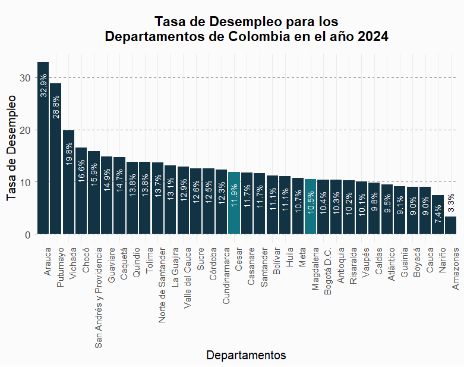
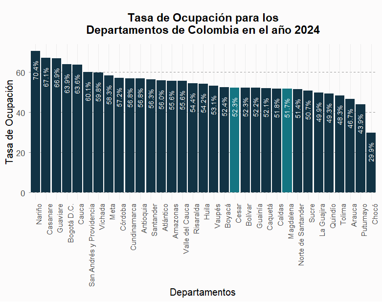

#DESCOMENTAR EN CASO DE QUE NO TENGAS INSTALADAS LAS LIBRERIAS
#install.packages("data.table")
#install.packages("ggplot2")
#install.packages("dplyr")
library(data.table)
library(ggplot2)
library(dplyr)Ejercicios: Calculo y grafico de indicadores
Nota: Para utilizar las funciones presentadas en este documento, es necesario contar con la base de datos completa de la GEIH. Puedes obtener la GEIH completa en el siguiente enlace: https://geih.com. Aunque es recomendable tener conocimientos previos en R, esta guía ha sido diseñada y organizada para ser lo más explicativa posible.
Instalación y carga de librerías
Instalación de librerías: Las primeras líneas comentadas indican que, si no tienes instaladas las librerías
data.table,ggplot2, ydplyr, puedes descomentar esas líneas para instalarlas. Esto es útil si estás ejecutando el código en un nuevo entorno de R donde estas librerías aún no están instaladas.Carga de librerías: Las siguientes líneas cargan las librerías mencionadas.
data.tablees excelente para manejar grandes volúmenes de datos,ggplot2para crear gráficos, ydplyrpara la manipulación de datos.
Lectura del archivo GEIH
#LEER EL ARCHIVO DE LA GEIH
#NOTA: Este archivo solo estará disponible si ejecuto las funciones "merge_month" y "geih_completed"
# las cuales se encuentran e el archivo join_geih.R
data_geih <- fread(file = "C:/data-exploration/geih_complete.csv")Comentario sobre el archivo: Aquí se menciona que el archivo
geih_complete.csvsolo estará disponible si antes has ejecutado las funcionesmerge_monthygeih_completed, que se encuentran en otro archivo llamadojoin_geih.R.Lectura del archivo: Se usa
fread()de la libreríadata.tablepara leer el archivo CSV. Esta función es rápida y eficiente, especialmente para archivos grandes. El archivo se guarda en un objeto llamadodata_geih.Nota sobre la ruta: La ruta
C:/data-exploration/geih_complete.csves específica para tu dispositivo. Si guardas el archivo en una ubicación diferente, tendrás que ajustar la ruta en el código para que apunte al lugar correcto en tu máquina.
Reemplazo de códigos de departamentos por nombres
data_geih[, DPTO := fcase(
DPTO == "5", "Antioquia",
DPTO == "8", "Atlántico",
DPTO == "11", "Bogotá D.C.",
DPTO == "13", "Bolívar",
DPTO == "15", "Boyacá",
DPTO == "17", "Caldas",
DPTO == "18", "Caquetá",
DPTO == "19", "Cauca",
DPTO == "20", "Cesar",
DPTO == "23", "Córdoba",
DPTO == "25", "Cundinamarca",
DPTO == "27", "Chocó",
DPTO == "41", "Huila",
DPTO == "44", "La Guajira",
DPTO == "47", "Magdalena",
DPTO == "50", "Meta",
DPTO == "52", "Nariño",
DPTO == "54", "Norte de Santander",
DPTO == "63", "Quindío",
DPTO == "66", "Risaralda",
DPTO == "68", "Santander",
DPTO == "70", "Sucre",
DPTO == "73", "Tolima",
DPTO == "76", "Valle del Cauca",
DPTO == "81", "Arauca",
DPTO == "85", "Casanare",
DPTO == "86", "Putumayo",
DPTO == "88", "San Andrés y Providencia",
DPTO == "91", "Amazonas",
DPTO == "94", "Guainía",
DPTO == "95", "Guaviare",
DPTO == "97", "Vaupés",
DPTO == "99", "Vichada",
default = NA_character_
)]Reemplazo de valores: Este bloque de código usa la función
fcase()dedata.tablepara reemplazar los códigos numéricos de los departamentos por sus nombres. Cada condición (por ejemplo,DPTO == "5") se empareja con un valor ("Antioquia"), y así sucesivamente.Asignación: La función
fcase()se aplica dentro dedata_geih, y el resultado se asigna a la columnaDPTO. Esto reemplaza los códigos por nombres directamente en la tabla.Valores no encontrados: Si un código no coincide con los especificados,
fcase()asigna un valorNAa esa fila.
Guardar el archivo modificado (opcional)
#SI DESEAS DESCARGAR LA GEIH CON LA MODIFICACION ANTERIOR
#(REEMPLAZO DE CODIGOS DE DEPARTAMENTOS POR SUS NOMBRES RESPECTIVOS) DESCOMENTA LA SIGUIENT LINEA
#fwrite(data_geih, file = "geih_modify.csv")Guardado del archivo: Esta línea te permite guardar la versión modificada del archivo data_geih en un nuevo CSV llamado geih_modify.csv. Si deseas hacerlo, solo necesitas descomentar la línea.
1. Función para el calculo de indicadores (group_variables)
La función group_variables tiene como objetivo crear un dataframe que incluya variables e indicadores clave para la práctica. Entre los datos que se generarán se encuentran la población por departamento (factor_expansion), el número de ocupados y desocupados, así como las tasas de desempleo y de ocupación para cada uno de los departamentos de Colombia.:
group_variables <- function() {
base_dir <- file.path(getwd(), "datos")
months <- list.dirs(path = base_dir, full.names = FALSE, recursive = FALSE)
factor_expansion <- data_geih[MES == length(months), .(factor_expansion = sum(FEX_C18)), by = DPTO]
ocupados <- data_geih[, .(ocupados = sum(OCI * FEX_C18, na.rm = TRUE) / length(months)), by = DPTO]
desocupados <- data_geih[, .(desocupados = sum(DSI * FEX_C18, na.rm = TRUE) / length(months)), by = DPTO]
poblacion_edad_trabajar <- data_geih[P6040 >= 15,
.(poblacion_edad_trabajar = sum(FEX_C18, na.rm = TRUE) / length(unique(MES))), by = DPTO]
combined <- factor_expansion[ocupados, on = "DPTO"][desocupados, on = "DPTO"][poblacion_edad_trabajar, on = "DPTO"]
combined[, fuerza_trabajo := (ocupados + desocupados) ] #POBLACIÓN ACTIVA
combined[, tasa_desempleo := (desocupados / fuerza_trabajo) * 100] #TASA DE DESEMPLEO
combined[, tasa_ocupacion := (ocupados / poblacion_edad_trabajar) * 100] #TASA DE OCUPACIÓN
return (combined)
}1.1 Definición de la función
group_variables <- function() {Aquí se define la función group_variables que, cuando se ejecute, realizará un conjunto de operaciones sobre los datos de data_geih y devolverá un data.frame con diversas estadísticas laborales a nivel departamental.
1.2 Obtención del directorio base
base_dir <- file.path(getwd(), "datos")Esta línea crea una variable llamada base_dir, que almacena la ruta del directorio donde se encuentran los datos. Usa getwd() para obtener el directorio de trabajo actual y luego agrega la carpeta “datos” al final de esa ruta.
1.3 Listado de meses disponibles
months <- list.dirs(path = base_dir, full.names = FALSE, recursive = FALSE)Aquí se genera una lista de subdirectorios dentro de base_dir. Cada subdirectorio corresponde a un mes. El parámetro full.names = FALSE asegura que solo se guarden los nombres de los subdirectorios, y recursive = FALSE evita que se busquen subdirectorios dentro de subdirectorios.
1.4 Cálculo del factor de expansión
factor_expansion <- data_geih[MES == length(months), .(factor_expansion = sum(FEX_C18)), by = DPTO]Esta línea filtra los datos de data_geih para el mes que corresponde al total de meses disponibles (MES == length(months)) y luego calcula el factor de expansión (FEX_C18) sumado para cada departamento (by = DPTO). El resultado se guarda en la variable factor_expansion.
MES == length(months): Filtra el último mes de la lista de meses.sum(FEX_C18): Suma el factor de expansión.by = DPTO: Agrupa los resultados por departamento.
1.5 Cálculo del número de ocupados
ocupados <- data_geih[, .(ocupados = sum(OCI * FEX_C18, na.rm = TRUE) / length(months)), by = DPTO]Esta línea calcula el número de personas ocupadas por departamento. Se multiplica la variable OCI (que indica si una persona está ocupada) por el factor de expansión (FEX_C18) y se divide por el número de meses para obtener un promedio mensual.
OCI * FEX_C18: Calcula el número ponderado de ocupados.sum(OCI * FEX_C18, na.rm = TRUE): Suma los valores para cada departamento./ length(months): Divide por el número de meses para obtener el promedio mensual.
1.6 Cálculo del número de desocupados
desocupados <- data_geih[, .(desocupados = sum(DSI * FEX_C18, na.rm = TRUE) / length(months)), by = DPTO]Similar a la parte anterior, esta línea calcula el número de desocupados por departamento. DSI es una variable que indica si una persona está desocupada, y se aplica el mismo proceso de ponderación y promediado mensual.
1.7 Cálculo de la población en edad de trabajar
poblacion_edad_trabajar <- data_geih[P6040 >= 15,
.(poblacion_edad_trabajar = sum(FEX_C18, na.rm = TRUE) / length(unique(MES))), by = DPTO]Esta línea calcula la población en edad de trabajar, que se define aquí como personas de 15 años o más (P6040 >= 15). Se suma el factor de expansión y se divide por el número de meses únicos para obtener un promedio.
P6040 >= 15: Filtra las personas de 15 años o más.sum(FEX_C18, na.rm = TRUE): Suma ponderada de la población./ length(unique(MES)): Promedio mensual, considerando solo los meses únicos
1.8 Combinación de los resultados
combined <- factor_expansion[ocupados, on = "DPTO"][desocupados, on = "DPTO"][poblacion_edad_trabajar, on = "DPTO"]Aquí se combinan las tablas factor_expansion, ocupados, desocupados y poblacion_edad_trabajar en una sola tabla llamada combined. La combinación se hace por la columna DPTO (departamento) utilizando la función on, que actúa como una especie de JOIN.
1.9 Cálculo de la población activa
combined[, fuerza_trabajo := (ocupados + desocupados)]Esta línea crea una nueva columna en combined llamada fuerza_trabajo, que es la suma de los ocupados y desocupados por departamento.
1.10 Cálculo de la tasa de desempleo
combined[, tasa_desempleo := (desocupados / fuerza_trabajo) * 100]Aquí se calcula la tasa de desempleo como el porcentaje de desocupados sobre la población activa.
1.11 Cálculo de la tasa de ocupación
combined[, tasa_ocupacion := (ocupados / poblacion_edad_trabajar) * 100]Esta línea calcula la tasa de ocupación como el porcentaje de ocupados sobre la población en edad de trabajar.
1.12 Retorno del resultado
return (combined)
}Finalmente, la función group_variables devuelve la tabla combined, que contiene todas las estadísticas calculadas.
1.13 Ejecución de la función
table_variables_to_graph <- group_variables()Esta línea ejecuta la función group_variables y almacena el resultado en la variable table_variables_to_graph.
2. Función para graficar indicadores (graph_variables)
La función graph_variables se encarga de graficar variables de forma dinámica, esta desarrollada para graficar la tasa de desempleo y la tasa de ocupación .
graph_variables <- function(df, variable, title_graph, title_y) {
new_df <- data.table()
new_df[, `:=` (DPTO = df$DPTO, var = variable)]
desc_data <- new_df %>% arrange(desc(var))
colors <- ifelse(desc_data$DPTO == "Cesar" | desc_data$DPTO == "Magdalena", '#147582', '#123344')
colors_filter <- setNames(colors, levels(factor(desc_data$DPTO, levels = reorder(desc_data$DPTO, -desc_data$var))))
ggplot(desc_data, aes(x = reorder(DPTO, -var), y = var, fill = DPTO)) +
geom_bar(stat = "identity", size = 0.6) +
scale_fill_manual(values = colors_filter) +
theme_minimal() +
theme(
axis.text.x = element_text(angle = 90, hjust = 1, size = 9),
axis.text.y = element_text(size = 10),
axis.title.x = element_text(size = 12),
axis.title.y = element_text(size = 12),
plot.title = element_text(size = 14, face = "bold", hjust = 0.5, margin = margin(b = 10, t = 10)),
panel.grid.major.y = element_line(color = "#959595", linetype = "dashed"),
panel.grid.minor.y = element_blank(),
legend.position = "none"
) +
labs(
title = title_graph,
x = "Departamentos",
y = "Tasa de Desempleo"
) +
geom_text(aes(
label = sprintf("%.1f%%", var)),
vjust = 0.4,
hjust = ifelse(desc_data$var < 5, -0.2, 1.5),
angle = 90,
size = 3,
color = ifelse(desc_data$var < 5, "#000", "white")
)
}2.1 Definición de la función
graph_variables <- function(df, variable, title_graph, title_y) {Aquí se define la función graph_variables, que crea un gráfico de barras a partir de una columna de un data.frame o data.table. La función toma cuatro argumentos:
df: Eldata.frameodata.tableque contiene los datos a graficar.variable: La variable que se desea graficar (por ejemplo, la tasa de desempleo).title_graph: El título del gráfico.title_y: El título del eje Y.
2.2 Creación de un nuevo data.table
new_df <- data.table()
new_df[, `:=` (DPTO = df$DPTO, var = variable)]Aquí se crea un nuevo data.table llamado new_df. Inicialmente, está vacío, pero luego se rellenan dos columnas:
DPTO: Contiene los nombres de los departamentos desdedf$DPTO.var: Almacena los valores de la variable seleccionada para graficar (por ejemplo, tasas de desempleo).
2.3 Ordenamiento de los datos
desc_data <- new_df %>% arrange(desc(var))En esta línea, los datos en new_df se ordenan de forma descendente según la columna var. El resultado se guarda en desc_data, que es el data.table que se utilizará para graficar.
2.4 Definición de los colores de las barras
colors <- ifelse(desc_data$DPTO == "Cesar" | desc_data$DPTO == "Magdalena", '#147582', '#123344')
colors_filter <- setNames(colors, levels(factor(desc_data$DPTO, levels = reorder(desc_data$DPTO, -desc_data$var))))Estas líneas configuran los colores de las barras en el gráfico:
Se usa
ifelsepara asignar un color específico (#147582) a los departamentos “Cesar” y “Magdalena”, y otro color (#123344) para los demás departamentos.Luego, se crea un vector de colores llamado
colors_filterque asocia cada color con su departamento correspondiente, respetando el orden descendente de la variable (var).
2.5 Creación del gráfico con ggplot2
ggplot(desc_data, aes(x = reorder(DPTO, -var), y = var, fill = DPTO)) +ggplot(desc_data, aes(...)):
Se inicia la creación del gráfico con
ggplot(), que es la función principal para crear gráficos en R.desc_data: Especifica eldata.tableque contiene los datos ordenados, el cual se usará para el gráfico.aes(...): Define la “aesthetics mapping” o mapeo estético, que indica cómo se deben representar los datos en el gráfico.x = reorder(DPTO, -var): Establece el eje X del gráfico.reorder(DPTO, -var): Ordena los departamentos (DPTO) en orden descendente según los valores devar(por ejemplo, tasas de desempleo). El signo negativo (-) indica que es un orden descendente.
y = var: Define el eje Y, que es el valor de la variable que estamos graficando (por ejemplo, la tasa de desempleo).fill = DPTO: Define el color de relleno de las barras según el departamento, lo que permite colorear cada barra de acuerdo a su departamento.
geom_bar(stat = "identity", size = 0.6) +geom_bar(stat = "identity", size = 0.6):
geom_bar(): Añade barras al gráfico.stat = "identity": Especifica que la altura de las barras debe corresponder directamente a los valores dey(en este caso,var). Es decir, no se realizarán cálculos adicionales como el conteo de valores (que es el comportamiento predeterminado degeom_bar).size = 0.6: Define el grosor de los bordes de las barras, haciéndolos ligeramente más delgados.
scale_fill_manual(values = colors_filter) +scale_fill_manual(values = colors_filter):
scale_fill_manual(): Controla cómo se asignan los colores a las barras.values = colors_filter: Usa el vectorcolors_filter, que contiene los colores personalizados para cada departamento, para llenar las barras según el departamento específico.
theme_minimal() +theme_minimal():
- Aplica el tema
minimalal gráfico, que simplifica el diseño, eliminando líneas y fondos innecesarios para darle un aspecto limpio y moderno.
theme(
axis.text.x = element_text(angle = 90, hjust = 1, size = 9),
axis.text.y = element_text(size = 10),
axis.title.x = element_text(size = 12),
axis.title.y = element_text(size = 12),
plot.title = element_text(size = 14, face = "bold", hjust = 0.5, margin = margin(b = 10, t = 10)),
panel.grid.major.y = element_line(color = "#959595", linetype = "dashed"),
panel.grid.minor.y = element_blank(),
plot.background = element_rect(fill = "#fcfbfb", color = NA),
legend.position = "none"
) +theme(...):
Personaliza el estilo del gráfico mediante varios ajustes:
axis.text.x = element_text(angle = 90, hjust = 1, size = 9):element_text(...): Controla la apariencia del texto en los ejes.angle = 90: Rota el texto de las etiquetas del eje X 90 grados, de modo que queden verticales.hjust = 1: Ajusta la posición horizontal del texto para alinearlo a la derecha.size = 9: Establece el tamaño de las etiquetas del eje X.
axis.text.y = element_text(size = 10):- Ajusta el tamaño de las etiquetas del eje Y a 10 puntos.
axis.title.x = element_text(size = 12):- Establece el tamaño del título del eje X a 12 puntos.
axis.title.y = element_text(size = 12):- Establece el tamaño del título del eje Y a 12 puntos.
plot.title = element_text(...):Controla la apariencia del título del gráfico.
size = 14: Establece el tamaño del título a 14 puntos.face = "bold": Hace que el título sea negrita.hjust = 0.5: Centra el título horizontalmente.margin = margin(b = 10, t = 10): Añade un margen de 10 puntos arriba y abajo del título.
panel.grid.major.y = element_line(color = "#959595", linetype = "dashed"):panel.grid.major.y: Ajusta la apariencia de las líneas de la cuadrícula principal en el eje Y.color = "#959595": Cambia el color de las líneas de la cuadrícula a un gris claro.linetype = "dashed": Cambia las líneas a un estilo punteado.
panel.grid.minor.y = element_blank():panel.grid.minor.y: Elimina las líneas de cuadrícula menores en el eje Y.
plot.background = element_rect(fill = "#fcfbfb", color = NA):fill = "#fcfbfb":Color del fondo de la graficacolor = NA:Elimina los colores que trae por defecto el grafico
legend.position = "none":- Oculta la leyenda, ya que los colores de las barras no necesitan explicación adicional.
labs(
title = title_graph,
x = "Departamentos",
y = title_y
) +labs(...):
title = title_graph: Define el título del gráfico usando el valor pasado en el argumentotitle_graph.x = "Departamentos": Establece la etiqueta del eje X como “Departamentos”.y = title_y: Establece la etiqueta del eje Y usando el valor pasado entitle_y.
geom_text(aes(
label = sprintf("%.1f%%", var)),
vjust = 0.4,
hjust = ifelse(desc_data$var < 5, -0.2, 1.5),
angle = 90,
size = 3,
color = ifelse(desc_data$var < 5, "#000", "white")
)geom_text(aes(...)):
Añade etiquetas de texto encima de las barras que muestran el valor de
varen formato de porcentaje.label = sprintf("%.1f%%", var):- Formatea los valores de
varcomo porcentajes con un decimal, añadiendo un símbolo%al final.
- Formatea los valores de
vjust = 0.4:- Ajusta la posición vertical de las etiquetas ligeramente por encima del centro de las barras.
hjust = ifelse(desc_data$var < 5, -0.2, 1.5):Ajusta la posición horizontal de las etiquetas dependiendo del valor de
var.Si
vares menor a 5, las etiquetas se colocan fuera de la barra (hjust = -0.2).Si
vares mayor o igual a 5, las etiquetas se colocan dentro de la barra (hjust = 1.5).
angle = 90:- Rota las etiquetas 90 grados, de manera que se alineen con las barras.
size = 3:- Establece el tamaño de las etiquetas en 3 puntos, haciendo que el texto sea pequeño pero legible.
color = ifelse(desc_data$var < 5, "#000", "white"):Cambia el color del texto dependiendo del valor de
var.Si
vares menor a 5, el texto es negro ("#000").Si
vares mayor o igual a 5, el texto es blanco, lo que asegura que sea visible contra el fondo de la barra.
2.6 Retorno de la función
2.6.1 Tasa de desempleo
graph_variables(
table_variables_to_graph,
table_variables_to_graph$tasa_desempleo,
"Tasa de Desempleo para los\nDepartamentos de Colombia en el año 2024",
"Tasa de Desempleo"
)
2.6.2 Tasa de ocupación
graph_variables(
table_variables_to_graph,
table_variables_to_graph$tasa_ocupacion,
"Tasa de Ocupación para los\nDepartamentos de Colombia en el año 2024",
"Tasa de Ocupación"
)
Apéndice
Función group_variables
La función group_variables calcula estadísticas sobre empleo y desempleo a nivel departamental usando datos de la GEIH. Primero, define el directorio de trabajo y lista los meses disponibles. Luego, calcula el factor de expansión y el número promedio de ocupados y desocupados por departamento, ajustados por este factor. También calcula la población activa elegible para trabajar. Combina estos datos en una tabla con la población activa, la tasa de desempleo y la tasa de ocupación, y devuelve esta tabla con las estadísticas completas por departamento.
Función graph_variables
La función graph_variables crea un gráfico de barras para visualizar tasas de desempleo u ocupación por departamento. Toma un data.table, el nombre de la variable a graficar, y los títulos del gráfico. Prepara y ordena los datos, asigna colores a los departamentos, y usa ggplot2 para generar el gráfico. Ajusta el estilo del gráfico y añade etiquetas con los valores exactos en las barras. El resultado es un gráfico claro y visualmente atractivo que muestra las tasas por departamento.